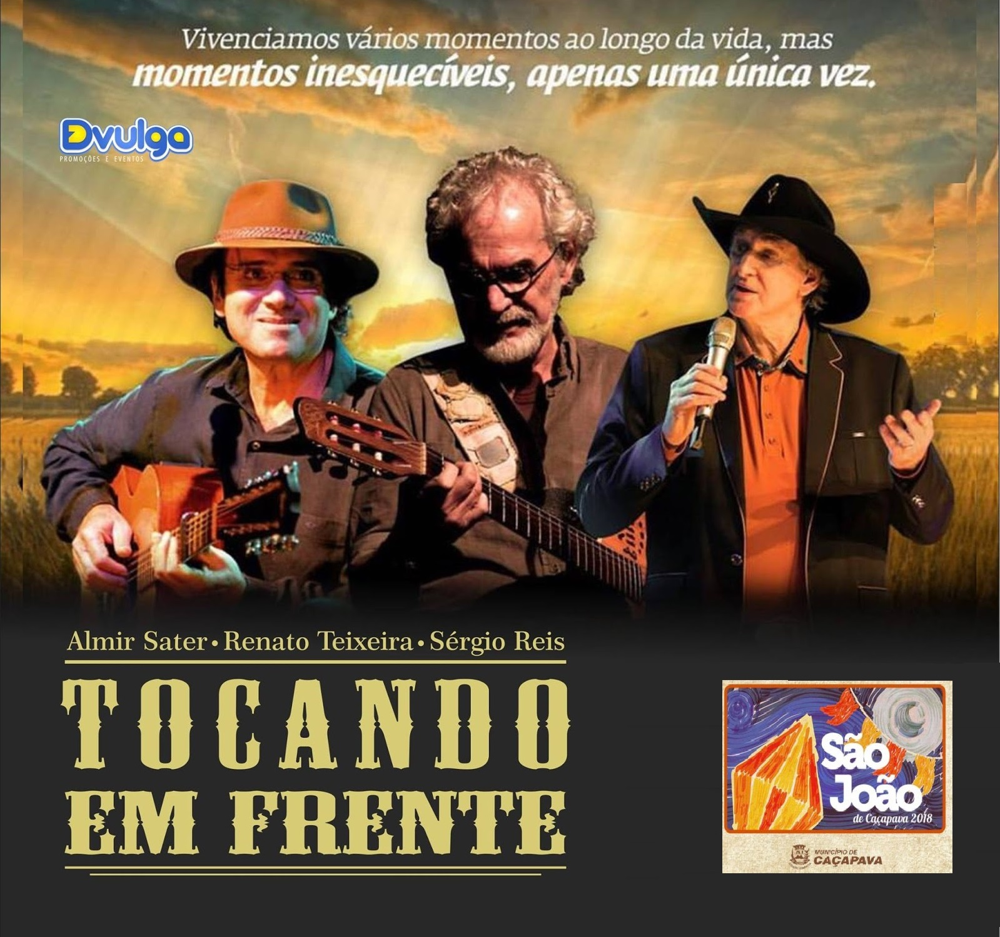
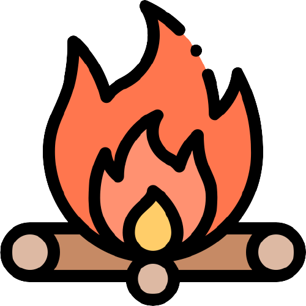
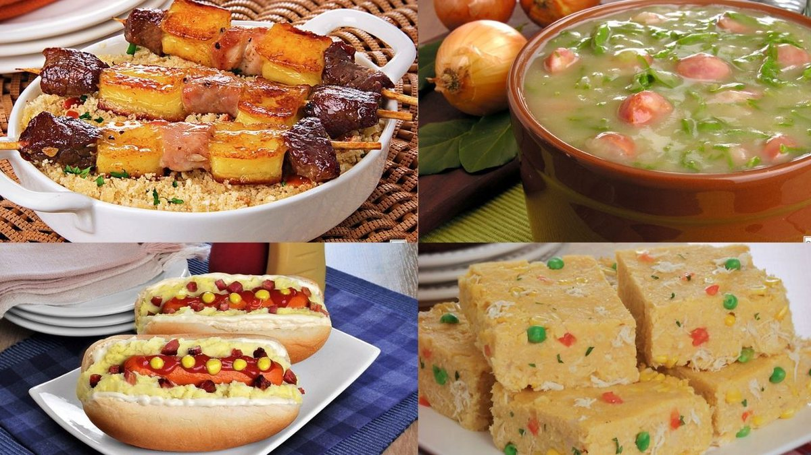
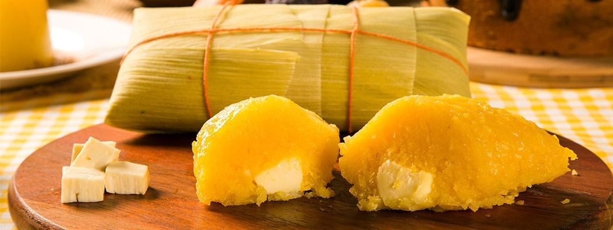

História da Festa
Com mais de 80 anos de tradição, a Festa São João de Caçapava reúne
elementos dos festejos juninos do Nordeste brasileiro com as
características da cultura caipira do interior paulista. O evento é considerado um dos maiores festivais
culturais do gênero no Vale do Paraíba e no estado de São Paulo.
A festa já foi palco para grandes músicos, como Renato Teixeira, Almir Sater, Sérgio Reis, Zé Ramalho, Elba
Ramalho, Zeca Baleiro, Dominguinhos e Inezita Barroso.
Veja a programação completa da Festa de São João:
|
|
|
|
| 10h – Abertura dos Portões | 13h – Show com a Orquestra Canto da Viola | 10h – Missa Solene na Igreja Matriz de São João Batista |
| 17h - Exposição da imagem de São João Batista na Estação Fornovo | 18h - Quadrilha de Bonecões da Mantiqueira e Moraes Moreira | 19h – Bênção do Mastro com Padre Leandro dos Santos |
| 20h30 - Orquestra Canto da Viola | 20h30 - Quadrilha de Bonecões da Mantiqueira e Moraes Moreira | 20h - Show Fuá Rabecado |

No dia 23/06 teremos o encerramento das festividade, acompanhado de um Trio muito
Especial:
Almir Sater, Renato Teixeira e Sérgio Reis.
Almir Sater, Renato Teixeira e Sérgio Reis.
Comidas Típicas: 

Receitas caseiras: Caldinho, Hot dog, Cuscuz, Espetinhos e muito mais...

Aquela saborosa pamonha recheada de queijo Minas...Hummm!!!

Bebidas para todos os gostos: Vinho Quente, Chocolate Quente e muito mais...